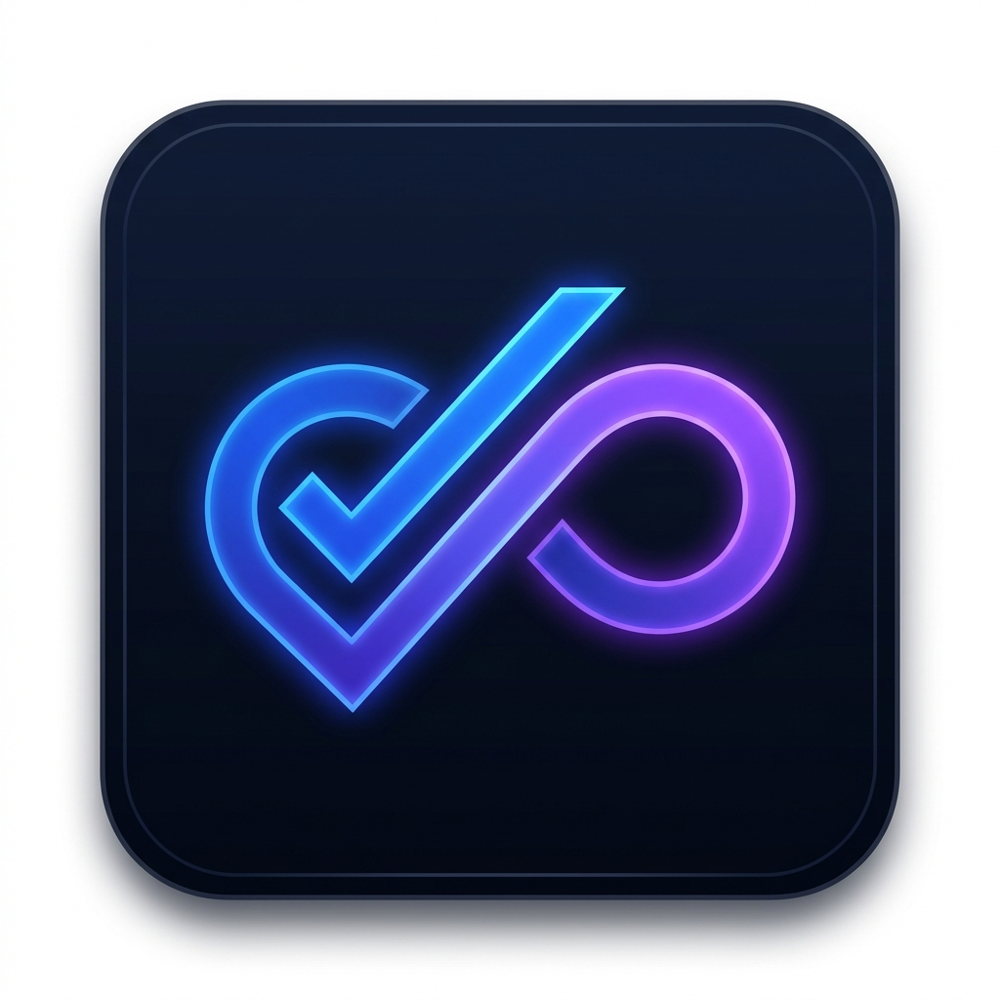
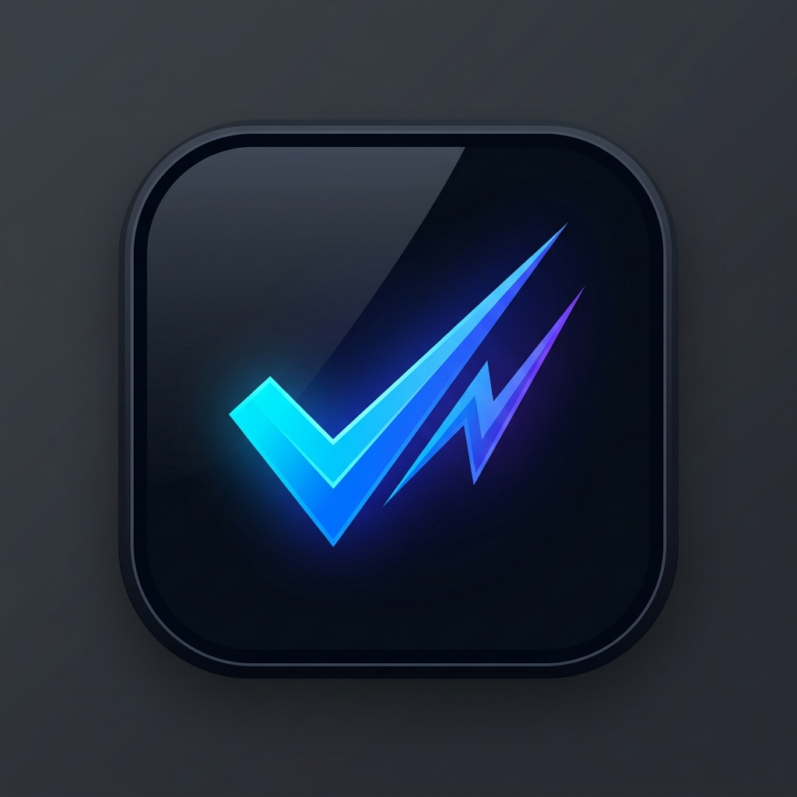

Masaüstü .exe ikonu, sistem tepsisi ve pencere başlığındaki "TaskFlow" metninin soluna eklenecek simge için 3 özel tasarım:

Onay tikinin (Checkmark) kesintisiz bir sonsuzluk akış döngüsüne (Flow Loop) dönüştüğü modern ve akıcı form.

Keskin geometrik onay işareti ile hız ve enerji simgesi olan nabız/yıldırım sinyalinin fütüristik birleşimi.
Çoklu projeleri temsil eden cam prizma katmanlarının dinamik bir açıyla yükselerek onay tiki oluşturması.